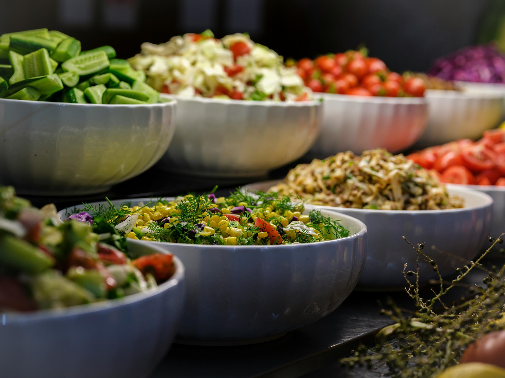

Plug-and-play menus
Package catering is built for straightforward events, office meals, gatherings, and hosts who want strong food without a heavy planning process.

Full-Service Catering & Events
Reimagined Nutrition supports private homes, corporate settings, workplace events, and outside venues with chef-led menus and organized service.
Ali Senatore, Executive Chef and Registered Dietitian Nutritionist (RDN), builds catering around the event, the guests, and the level of support the host needs.
[HUBSPOT SETUP NEEDED: connect this event CTA to a HubSpot catering inquiry form with event fields, deal routing, and follow-up workflow.]
Two Ways To Work Together
Package catering is built for straightforward events, office meals, gatherings, and hosts who want strong food without a heavy planning process.
Themed Events
Movies, music, tropical, farmers market, beachy - the menu, the tablescape, and the service are designed around the theme.
Settings
Reimagined Nutrition can support private homes and in-home service, corporate and workplace events, and outside venues. In-home events get the same planning as any venue: staffing, menu direction, and service flow built into the proposal.
Event Servers, TIPS-certified bartenders, and support staff, so the event feels organized and luxurious.
Lead Chef — Ali Senatore, RDN, CDN
Budget Direction
Different event styles call for different levels of service support. We can arrange just about everything you will need to throw a stellar event - just let us know.
Package catering and fully designed experiences sit at different service levels. Budget range is discussed during the inquiry.
What To Expect
The inquiry form collects the event type, date, location, guest count, service style, dietary needs across the group, budget range, and anything else Ali should know. The 15-minute call matters because it establishes fit before a proposal is built.
For designed and curated experiences, planning can include menu development, staffing, event flow, service details, and day-of management.
[ALI REVIEW NEEDED: confirm event lead times, cancellation terms, service radius, and whether package names should be created]
Start Here
Call Ali or share the basics now. The proposal will be built after Ali understands the setting, guests, service style, and level of support needed.
[HUBSPOT SETUP NEEDED: this CTA should use the HubSpot catering/event form once the client confirms final required fields.]